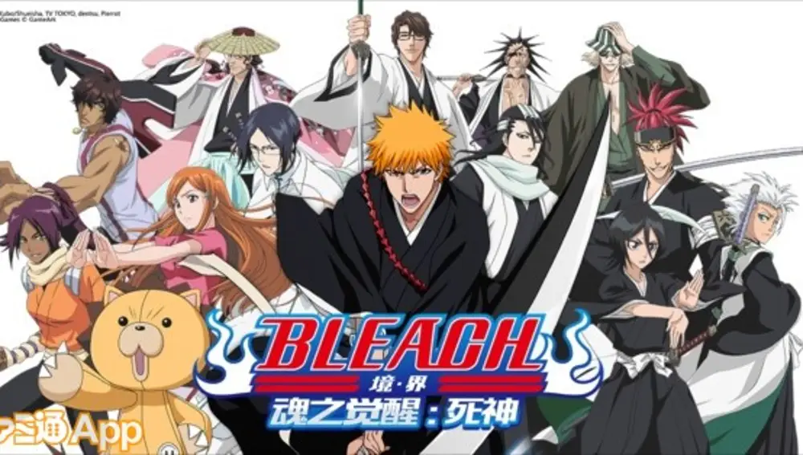

Bleach es uno de los animes y mangas más importantes del género shonen. Creado por Tite Kubo, cuenta la historia de Ichigo Kurosaki, un adolescente que puede ver espíritus y que se convierte en un Shinigami sustituto tras conocer a Rukia Kuchiki. Juntos combaten Hollows y descubren un mundo oculto lleno de Soul Reapers, Quincy y otras razas sobrenaturales. Con más de 700 capítulos de manga y cientos de episodios de anime, Bleach se convirtió en un clásico moderno del anime.
